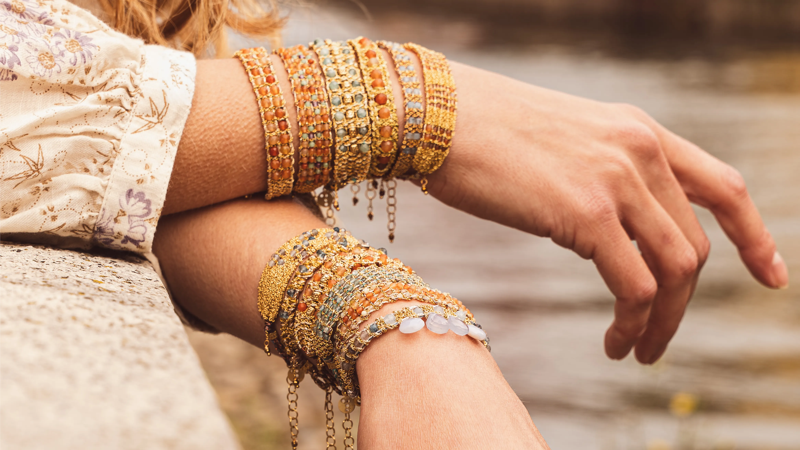
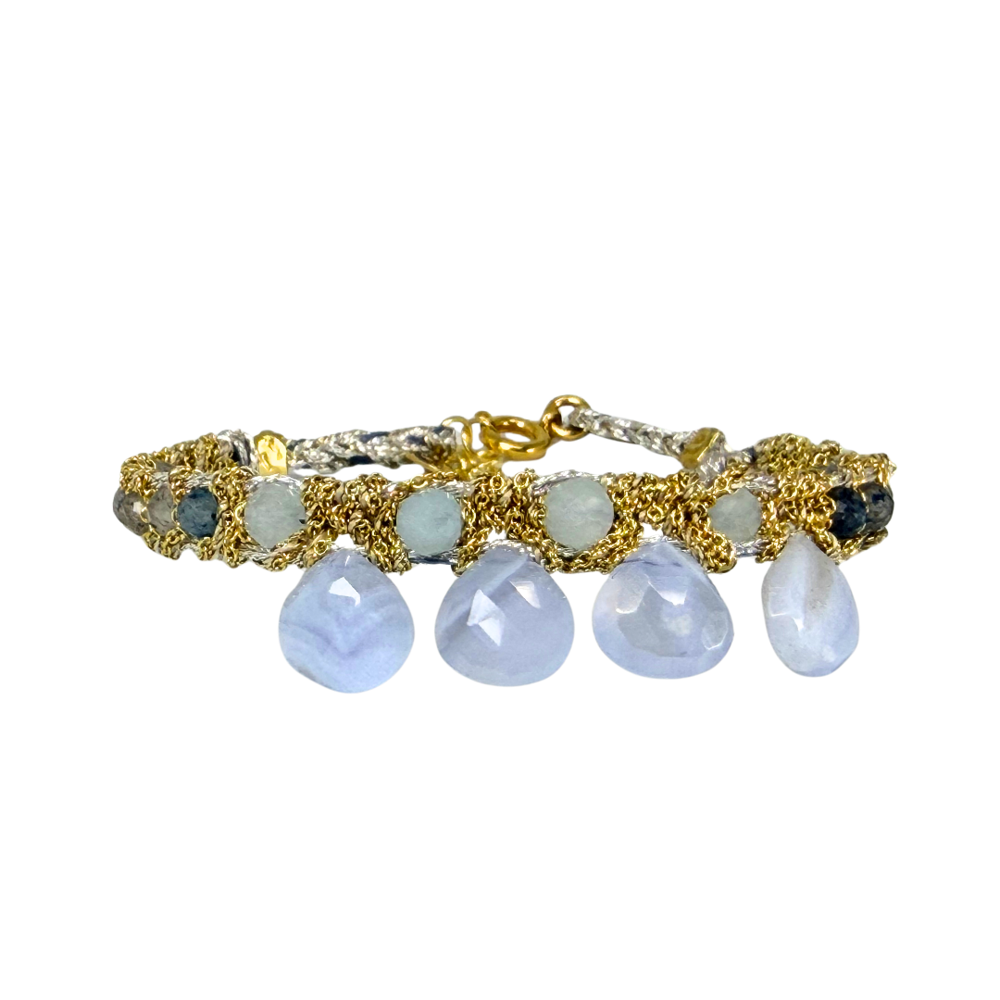
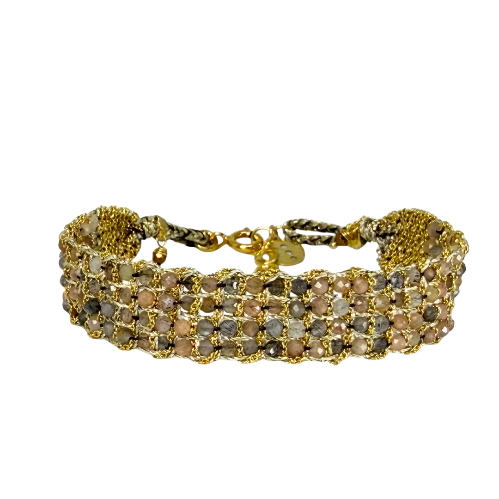
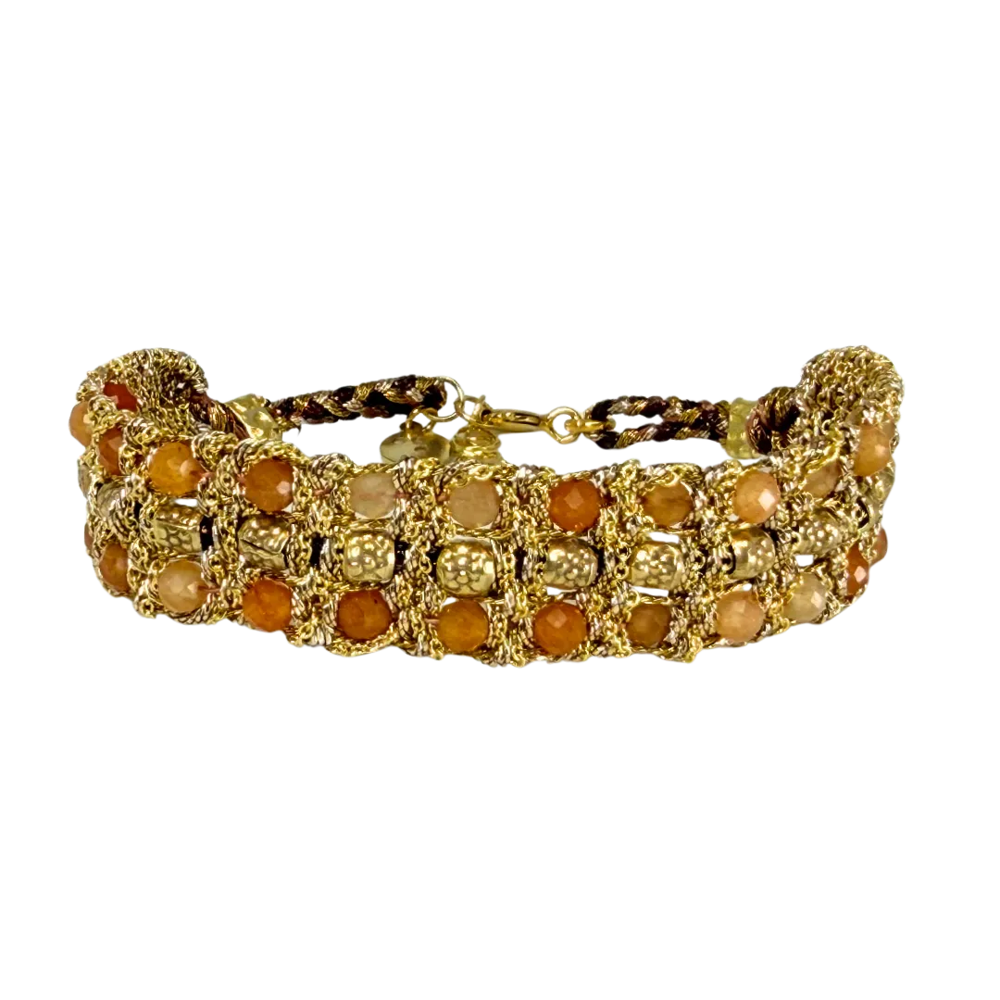
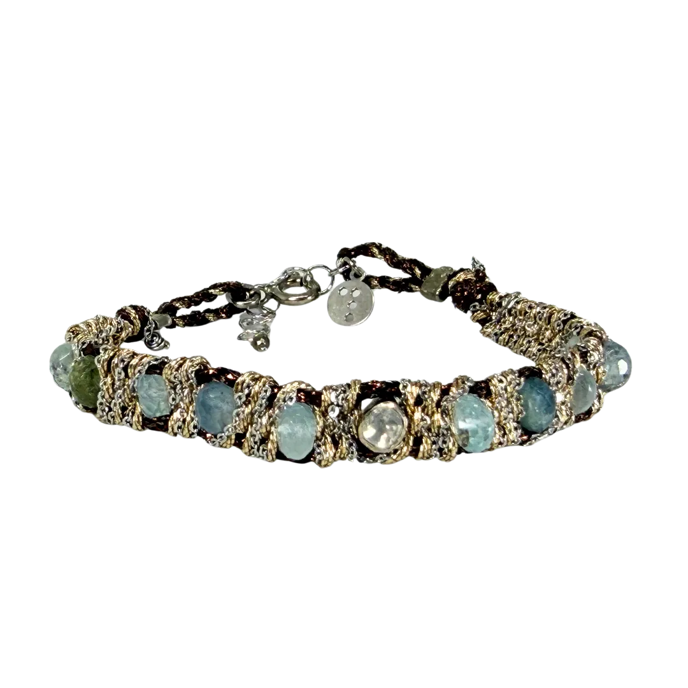
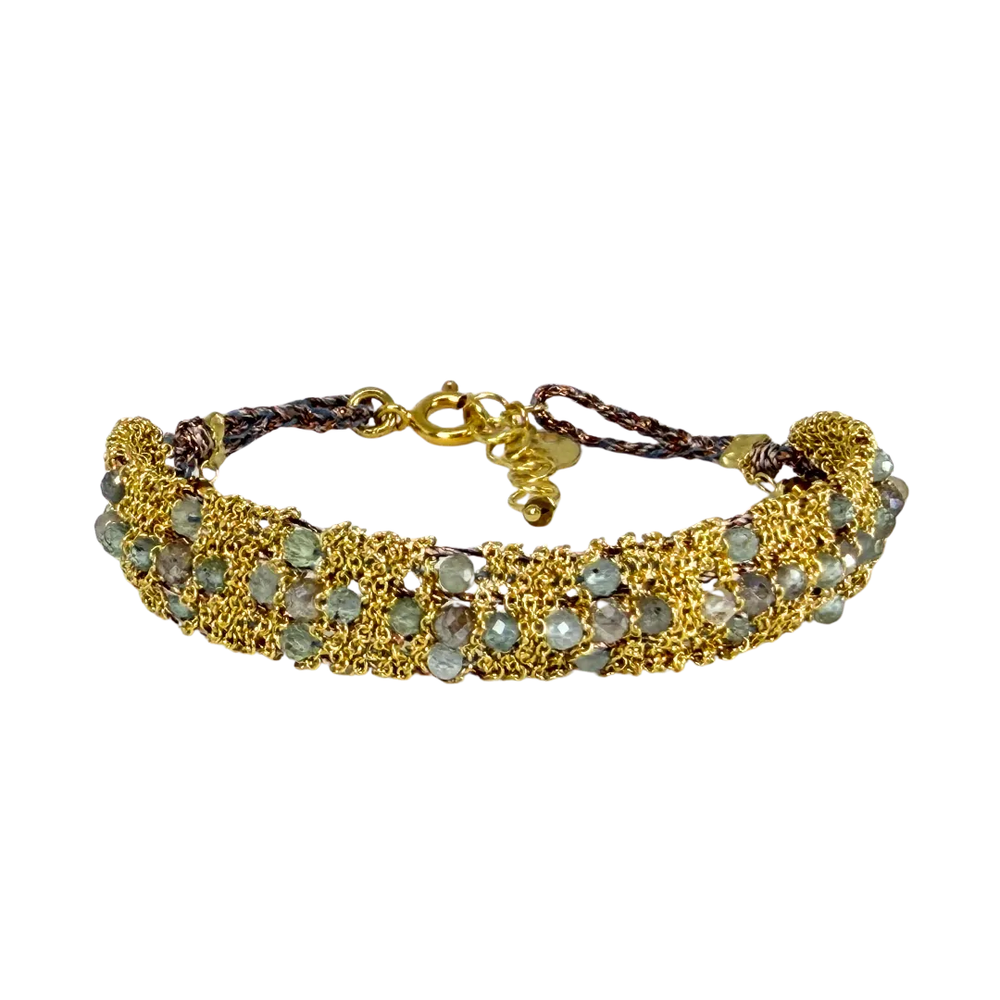

SEO
- Title, description, canonical, OG, Twitter Card ✓
- JSON-LD: Organization + WebSite ✓
- Aggiornare canonical con dominio definitivo
- Creare Assets/og/og-home.jpg (1200×630px)
- Plugin: Rank Math Pro o Yoast SEO Premium
Elementor / WordPress
- Template: Elementor Canvas (full-width)
- Hero: sezione 1 col, background image cover, overlay rgba ★★
- Manifesto: Inner Section 2 col, Heading + Text Editor ★
- Griglia editoriale 03: CSS Grid custom — non nativo Elementor ★★★
- Collection Index 05: JS hover crossfade — widget HTML custom ★★★★
- Still Life 06: IntersectionObserver + PNG scontornati — custom ★★★★
- Still Life: JS in functions.php → wp_enqueue_script o plugin Code Snippets
- Animazioni .fade: Elementor Motion Effects → Entrance Animation
- Stores Teaser: input decorativo, collegare a stores.html?q= in produzione
Assets necessari
- 1 foto hero 1920×1080 (laboratorio / mani / gioiello)
- 1 foto full-width 1920×1080 (tessitura a telaio)
- 5 immagini griglia editoriale (portrait + landscape)
- 4 immagini portrait 3:4 per Collection Index
- 1 foto ambientata 1920×900 (sfondo Still Life)
- 4 PNG scontornati gioielli (sfondo trasparente)

Storie intrecciate
da indossare.
Un sapere tramandato incontra pietre semipreziose, fili e argento. Intreccio dopo intreccio, prende forma in gioielli contemporanei fatti di materia, gesto e colore.
Un sapere antico.
Uno sguardo
contemporaneo.
DAG nasce da un sapere familiare legato all'oreficeria milanese. Oggi quel sapere incontra pietre semipreziose selezionate, il gesto del telaio e una ricerca contemporanea fatta di materia, colore e leggerezza.
Ogni creazione custodisce la storia da cui nasce, ma trova una forma nuova nel modo personale in cui viene indossata.

Stones & Textured
Scopri le collezioni →

Made in Milano.
Radici artigianali.
Sguardo contemporaneo.


La bellezza di ciò
che non si ripete.
Sul telaio, pietre semipreziose, catena d'argento e fili di lurex vengono lavorati a mano, un passaggio alla volta.
Nessuno stampo, nessuna produzione seriale: sono le variazioni della materia e del gesto a rendere ogni gioiello naturalmente irripetibile.
Scopri la filosofia

Candy Drop
Gocce di pietra dai toni tenui e luminosi, sospese sul filo come piccole caramelle di luce: il tocco più delicato della composizione.
Scopri le collezioni →
Muamara Jaipur
Toni tenui di luce lunare intrecciati filo su filo, un bracciale che porta con sé la calma delle prime ore del mattino.
Scopri le collezioni →
Muamara Jaipur
La stessa anima di Jaipur in una variazione più fitta di pietre calde: fasce di corniola e agata che si susseguono come un ricamo.
Scopri le collezioni →
Muamara Holi
L'energia della terra indiana in una fila continua di corniola: un accento caldo che vibra a ogni movimento del polso.
Scopri le collezioni →
Muamara Precious
Un mosaico di pietre calde e fredde tenute insieme dal gesto del telaio: il pezzo più ricco della composizione.
Scopri le collezioni →
Muamara Star
Il tratto più leggero della composizione: pietre minute e filo dorato per un gioiello quotidiano, quasi impalpabile.
Scopri le collezioni →
Trova DAG vicino a te.
Una rete selezionata di boutique e concept store accompagna il brand sul territorio.
Eventi e
collaborazioni.

Première Classe
La principale fiera europea dell'accessorio contemporaneo. Parigi.
Parigi

WHITE Milano
La piattaforma dedicata alla moda contemporanea e al design indipendente.
Milano

Jacopo Ascari
Con l'illustratore milanese DAG intreccia telaio e segno grafico: le sue illustrazioni traducono pietre, fili e colore in racconto, dando vita a capsule e progetti d'immagine condivisi.
Illustrazione · Milano
Ogni nuovo intreccio
comincia da un incontro.
Per informazioni sulle collezioni, sui rivenditori o per immaginare una collaborazione, scrivici.